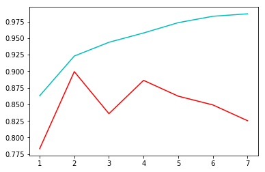
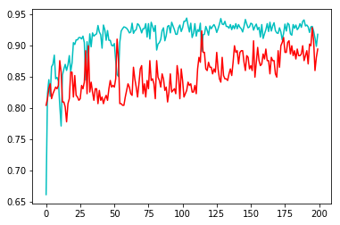
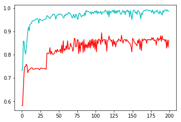
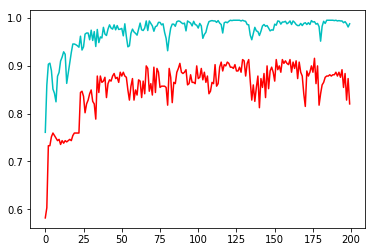

人工智能课要求使用朴素贝叶斯算法，决策树算法，人工神经网络，支持向量机算法对数据进行分类
加载数据&数据预处理
文件：
- dataset.txt 总数据（可以自行切分训练集和测试集）
- test.csv 训练集
- predict.csv 测试集
文件内容
| 标签 | 种类 |
|---|---|
| buying | low, med, high, vhigh |
| maint | low, med, high, vhigh |
| doors | 2, 3, 4, 5more |
| persons | 2, 4, more |
| lugBoot | small, med, big |
| safety | low, med, high |
| classValue | unacc, acc, good, vgood |
1 | import numpy as np |
非one-hot参数
[0 3 2 0 0 0]
非one-hot标签
0
one-hot参数
[[1 0 0 0]
[0 0 0 1]
[0 0 1 0]
[1 0 0 0]
[1 0 0 0]
[1 0 0 0]]
评估函数
定义好了输入，在定义一个统一的评估方式吧。最简单的方式是计算其正确率。其定义为：
其中T表示预测正确的样例数量，F表示预测错误的样例数量。
由于预测种类和原本标签的种类都有4种，因能得到16种组合，这里集合T包含那些预测和输出相等的组合。可以将这16种组合显示出来，左斜对角线上的值越大，说明分类效果越好。
1 | def predict_matrix(predicted, tags) -> np.ndarray: |
随机数：
[[ 6. 4. 3. 8.]
[ 2. 3. 7. 10.]
[ 3. 4. 4. 8.]
[10. 7. 10. 11.]]
accuracy: 0.2400
1. 朴素贝叶斯
1.1 原理
朴素贝叶斯就一个公式
如果加入独立性假设的话，可以将所有的$x_i$分离
由于对于所有的y，$P(x_1,x_2,\dots,x_n)$总是相同的，因此可以化简为：
那么对于给定的$x_i,x_2,\dots,x_n$，求最可能的y，就是枚举所有的y，让概率最大即可：
1.2 实现
sklearn提供了多种朴素贝叶斯分类器：高斯朴素贝叶斯GaussianNB、多项式朴素贝叶斯MultinomialNB、伯努利朴素贝叶斯BernoulliNB、补充朴素贝叶斯ComplementNB。不同贝叶斯分类器虽然使用的权值计算方式不同，也就是对$P(x|y)$分布的假设不同，但是核心原理都大同小异。
这里使用高斯朴素贝叶斯分类器，其主要参数有两种：
- priors : array-like, shape (n_classes,)
每个类的先验概率，可以不提供。如果提供则程序不会根据输入自动计算
- var_smoothing : float, optional (default=1e-9)
为计算稳定性而添加的所有要素的最大方差的一部分。
1 | from sklearn.naive_bayes import GaussianNB |
[[852. 109. 0. 0.]
[ 41. 136. 0. 0.]
[ 58. 10. 23. 2.]
[ 39. 56. 0. 24.]]
Accuracy of Naive Bayes working on training set is 0.7667
[[217. 38. 9. 0.]
[ 3. 35. 37. 39.]
[ 0. 0. 0. 0.]
[ 0. 0. 0. 0.]]
Accuracy of Naive Bayes working on testing set is 0.6667
1.3 寻找最佳参数组合
上面的结果不是很好。因此需要设置参数让朴素贝叶斯算法发挥更大的作用。如果需要更加精确的priors，那么首先需要知道总样本的概率分配，也就是从“data.csv”中知道所有的信息，但是这样就失去了“训练”的意义，不能正确反映出模型的 泛化能力 。因此选择不设置priors。
另一个参数的意义不太明确，不知道是不是限制最大的方差？但是为了求解可以在一定范围内离散枚举，选择让正确率最大的var_smoothing。
1 | # Setting the var—smoothing |
Var_smoothing = 0.053647 leads to best accuracy 0.8254
看来使用高斯朴素贝叶斯所能达到的最好的结果是正确率为82.54%，这个结果并不是特别优秀。下面再试试看其他的分类器。
2. 决策树
2.1 原理
决策树是一棵递归生成的树，具有较强的泛化能力。
构建决策树的关键在于对于每个维度的划分，每一次划分都会产生一些样本纯度更高的子结点，也就是子结点中样本的类别尽可能统一。
2.1.1 划分指标
评价一些样本“纯度”常用的指标是信息熵
和基尼系数
其中$p_i$是X中类别i的比例。这两个指标的特点都是当样本的类别越统一，指标给出的值越小，当样本完全属于同一类别时，指标为0。
有了衡量样本“纯度”的标准，就可以定义属性分类训练数据的效力的度量标准——信息增益。一个属性的信息增益就是由于使用该属性划分样本导致的期望的熵降低程度。一个属性A相对于样本集合S的信息增益$Gain(S,A)$定义为：
- $ V(A) $是属性A的值域
- S是样本集合
- $ S_v $是S中在属性A熵值等于v的样本集合
实际上这个公式就是将原来的总信息熵减去各子结点信息熵的加权平均数。
2.1.2 剪枝
剪枝（pruning）是决策树学习算法对付“过拟合”的主要手段。在决策树学习中，为了尽可能正确分类训练样本，节点划分过程不断重复，有时会造成决策树分支过多，这时就可能因训练样本学得“太好”了，以至于把训练样本自身的一些特点当作所有数据都具有的一般性质而导致过拟合。因此，可通过主动去掉一些分支来降低过拟合的风险。
2.2 实现
训练、测试决策树均使用非one-hot编码的数据集和测试集。
这里使用sklearn中的DecisionTreeClassifier类，训练函数fit一般只需要传入测试集和标签即可。
DecisionTreeClassifier在实例化的时候可以接受几个参数，用于定制不同的分类器。其中参数criterion选择评估分类的函数，有基尼系数gini和信息熵entropy两种。
上面提到了决策树算法容易过拟合，因此需要剪枝，在实例化分类器的时候可以选择设置如下参数：
- max_depth : int or None, optional (default=None)
这个参数定义了决策树的最大深度，如果没有设置这个参数，那么决策树结点会一直分类直到该结点中样本的类别相同或者样本数小于min_samples_split
- min_samples_split : int, float, optional (default=2)
分裂一个结点至少需要的样本数
- min_samples_leaf : int, float, optional (default=1)
成为一个结点至少需要的样本数
- min_weight_fraction_leaf : float, optional (default=0.)
成为一个结点至少需要的权重和（该结点样本的权重占所有样本的权重）
上面的这些参数不可能一拍脑袋就能想出最优的，这个需要结合实际训练结果慢慢尝试。
1 | from sklearn import tree |
[[990. 8. 1. 0.]
[ 0. 303. 1. 1.]
[ 0. 0. 21. 1.]
[ 0. 0. 0. 24.]]
Accuracy of Naive Bayes working on training set is 0.9911
[[220. 13. 2. 0.]
[ 0. 60. 23. 14.]
[ 0. 0. 21. 1.]
[ 0. 0. 0. 24.]]
Accuracy of Naive Bayes working on testing set is 0.8598
2.3 寻找最佳的参数组合
上面的预测结果还不错，仅随意设置的参数就能超越上面朴素贝叶斯分类器的结果，但是只凭一次预测并不能知道决策树的最佳结果。为了寻找最合适的参数，可以在参数空间进行枚举，记录最佳的参数搭配。
1 | criterion = "" |
Best accuracy is 0.8783 when
criterion is gini
max_depth = 11
min_samples_split = 2
min_samples_leaf = 1
决策树最终的分类结果比朴素贝叶斯分类器要好。
2.4 可视化决策树
需要用到的第三方库graphviz。安装方法为：1
conda install python-graphviz
使用方法如下，最后会在当前目录下生成一个PDF文件。
1 | import os |
生成成功
3. SVM
3.1 原理
支持向量机的思想是在一个多维空间里寻找一个超平面，并且让离这个超平面最近的点到超平面的距离最大。
给定的训练样本形如：
SVM寻找的最佳超平面可以用如下方程描述：
$\vec{w}$表示法向量，$\vec{b}$表示超平面距离原点的距离。
一般情况下SVM做的事二分类任务，因此 通过缩放 ，可以让正样例距离超平面的距离和负样例相同，且都为1，并且正样例分布在超平面之上$\vec{w}^T+\vec{b} \ge 1$，负样例在超平面之下$\vec{w}^T+\vec{b} \le -1$。距离超平面最近的正负样例能让这个不等式取等号，这些样例代表的向量就称为 “支持向量” 。
超平面$\vec{w}^T+\vec{b} = 1$和超平面$\vec{w}^T+\vec{b} = -1$之间的距离记作$\gamma$，SVM做得就是让这个$\gamma$最大化。$\gamma$的距离很好计算：
这个表达式说明求最大距离只和$\vec{w}$有关。求满足要求的$\vec{w}$和$\vec{b}$就是SVM的工作，求解方法是用拉格朗日方法。
支持向量机的优点有很多：
- 在高维空间有效；
- 在尺寸数量大于样本数量的情况下仍然有效；
- 只要提供不同的和函数，就能产生不同的支持向量机；
决策树所做的事就是让所有的类别尽可能分开，但是SVM不仅让这些点分开，还尽可能让分类做得容错能力大，因此 期望SVM的效果会好于决策树。
但是同样它也具有一些缺点：如果特征的数量远大于样本的数量，则容易过拟合，此时正则化项是至关重要的。
3.2 实现
sklearn库提供了多种SVM，有SVC、NuSVC、LinearSVC等。不过决策树的参数很多，有如下这些：
- kernel : string, optional (default=’rbf’)
- SVM的核函数，有linear、poly、rbf、sigmoid、precomputed等。
- degree : int, optional (default=3)
- 如果选择poly类型的核函数，那么就能规定空间的维度，默认为3；其他和函数不需要这个参数。
- gamma : float, optional (default=’auto’)
- 这个参数是当核函数为rbf、poly或者sigmoid时使用的。它有两种选择：scale和auto。
- coef0 : float, optional (default=0.0)
- 核函数中的独立项。它只在’poly’和’sigmoid’中起作用。
- decision_function_shape : ‘ovo’, ‘ovr’, default=’ovr’
- 决策函数。ovr表示one-vs-rest，ovo表示one-vs-one。后者用于多分类。
- C : float, optional (default=1.0)
- 错误项的惩罚
- class_weight : {dict, ‘balanced’}, optional
- 默认所有的维度都是同等重要的。可以给不同的维度设定不同的权重。
先来尝试一下随意设置的参数的效果：
1 | from sklearn import svm |
[[975. 8. 0. 0.]
[ 15. 303. 4. 2.]
[ 0. 0. 19. 0.]
[ 0. 0. 0. 24.]]
Accuracy of SVM working on training set is 0.9785
[[217. 8. 1. 0.]
[ 2. 62. 22. 13.]
[ 1. 3. 22. 0.]
[ 0. 0. 1. 26.]]
Accuracy of SVM working on testing set is 0.8651
上述随意配置的SVM已经获得了较好的结果。
3.3 寻找最佳的参数组合
使用多边形核函数poly，尝试最佳的参数组合。这里改动空间比较大的选项是degree，并且可视化训练出来的SVM在训练集和测试集上的性能。
1 | import matplotlib.pyplot as plt |

Best accuracy is 0.8995 when degree is 2.
如上配置的SVM在训练集（青色线条）和测试集（红色线条）上的准确率变化如图所示，并最终得到的准确率为89.95%，是前几个中效果最好的。
4. 人工神经网络
4.1 模型定义
人工神经网络已经用了很多次了，这里使用PyTorch框架来实现一个全连接神经网络。并且这个数据集相对来说是比较简单的，每个样本仅有6个维度，因此不需要定义太多的隐含层，但是可以尝试使用线性和非线性两种激活函数。
1 | import torch |
上面定义了三个神经网络结构：
- Net1: 三层线性全连接
- Net2: 三层全连接+ReLU激活函数
- Net3: 三层全连接+Sigmoid激活函数
不过这些网络还处于定义阶段，没有被实例化，实例化的时候需要考虑输入数据的类型和形状。输入数据的类型和形状如下：
1 | paras: 6 * 4 |
由于每个神经元可以输入一个数值，因此首先需要将6*4的tensor展平为1*24，因此输入层需要24个神经元，也就是in_dim=24。同样的输出包含四个维度，因此out_dim=4。中间层的输出没有太大的规定，但是不能包含太多的神经元——防止神经元将输入数据全部学习导致过拟合。
4.2 模型训练
然后接下来就要开始训练了，输入输出的数据首先转化为可保存梯度的Variable类型。训练的时候将train_1hot_paras输入，将网络输出的结果和train_1hot_tags进行对比，得出的误差反传，将这样的步骤反复几次就能提高准确率。
输入的时候一般会将样本组织为batch * dim的形式，通过增加tensor的维度可以同时输入多个样本一起训练，然后反传误差。这样做的好处不仅可以抵消单样本带来的误差，当计算发生在GPU上的时候还可以加速训练。
由于使用one-hot编码，使用CrossEntropy损失函数，形式如下：
该损失函数的接受两个参数，第一个参数x是one-hot类型的模型输出向量，第二个参数class是标签中对该样本的分类。
使用反向传播方式训练参数，参数的优化器使用Adam，这是一种自动调整学习率的优化器。为了看到模型训练过程中的性能变化，在每次训练完一个epoch之后同时检验模型在训练集和测试集上的准确率，最终绘制误差曲线图。
1 | def Train_Test(net, epoch:int, batch_size:int, lr:float): |
4.2.1 线性模型训练
线性全连接网络使用较小的epoch，并增加隐藏层的结点数量。
1 | net1 = Net1(in_dim=24, hidden1=8, hidden2=8, out_dim=4) |
Best accuracy on testing set is 0.9286

4.2.2 ReLU激活模型训练
使用ReLU激活的网络设置较少的隐藏层结点，并增加batch的大小，以避免过拟合。
1 | net2 = Net2(in_dim=24, hidden1=8, hidden2=6, out_dim=4) |
Best accuracy on testing set is 0.8942

4.2.3 Sigmoid激活模型训练
使用Sigmoid激活的网络，同样设置较少的隐藏层结点，并增加batch的大小，以避免过拟合。
1 | net3 = Net2(in_dim=24, hidden1=6, hidden2=5, out_dim=4) |
Best accuracy on testing set is 0.9153

神经网络的训练结果存在不确定性，并且其最终的性能不仅和模型结构有关，甚至和训练中使用的超参数有很大的关系。但是能够看出神经网络的最佳性能至少比前三种分类器的性能好。
最后上述4中分类方法在训练集上的效果如下：
| 分类器 | 准确率 |
|---|---|
| 朴素贝叶斯 | 82.54% |
| 决策树 | 87.83% |
| SVM | 89.95% |
| 人工神经网络 | 89%-93% |
提高性能的方式
其实在很多分类任务中，不同参数的权重是不一样的，如果能提前知道这些参数各自的权重，那么性能上会有很大的提升。上面用到的4中分类方法很多函数都提供了权重参数，只不过没有用到。
如果有一个分类任务需要获得更优秀的分类性能，那么不妨在使用分类任务前，对样本预先分析，比如查看各个样本不同参数的分布情况等。
在使用神经网络的时候，样本的输入顺序是一直不变（偷懒），如果为了得到更好的分类结果，应该每一次都将训练数据集打乱。
还有一种比较可行的方式就是同时使用多种分类器，当不同分类器输出结果后，综合各分类器的建议，然后选择合适的结果。实际上有一种分类算法： 随机森林 的核心思想就是这样的。